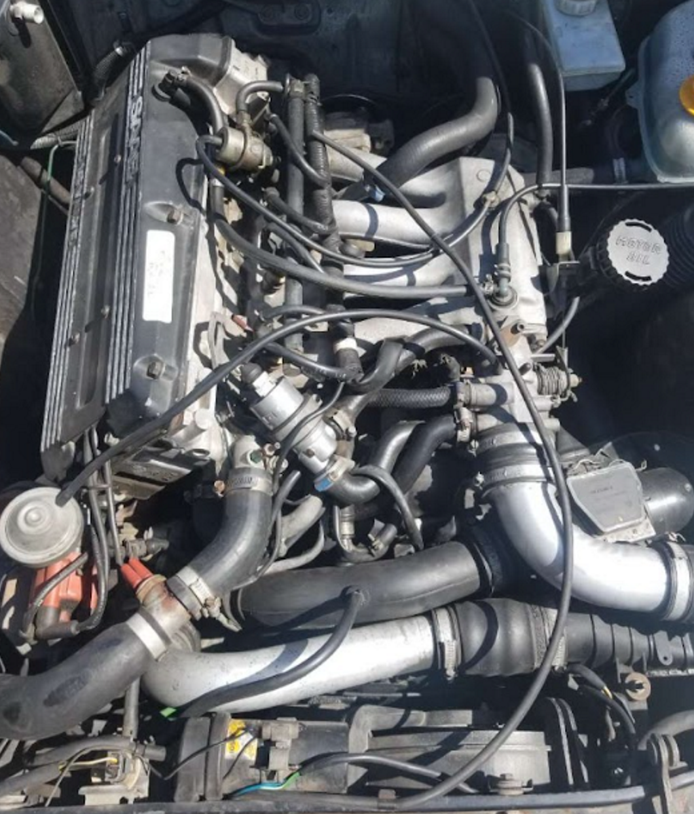
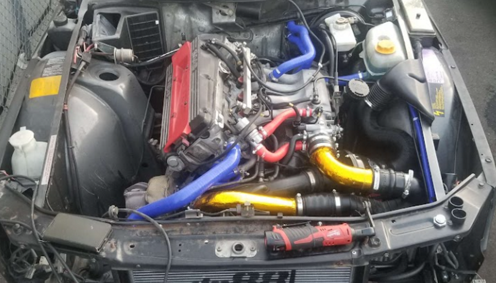

1991 Saab 900 Restoration
Mechanical restoration and refurbishment of a 1991 Saab 900, including fuel, cooling, electrical, suspension, and interior systems.

Project Overview
I helped restore and refurbish a 1991 Saab 900, working across many of the vehicle's mechanical, electrical, and interior systems. The project involved diagnosing problems, repairing or replacing aging components, and returning the vehicle to reliable operating condition.
Unlike my research and Formula SAE work, this project provided extensive hands-on experience working with an existing vehicle, where repairs had to account for aging components, packaging constraints, and interactions between multiple vehicle systems.
Engine & Fuel System
A significant portion of the restoration involved work within the engine bay and fuel system. I helped repair and replace components associated with fuel delivery and ignition, including work on the fuel rail, fuel system, wiring harness, and spark plugs.
This required working around the tight packaging of the Saab engine bay while keeping track of electrical connections, fuel lines, hoses, and other supporting systems.


Cooling System
I also helped refurbish the vehicle's cooling system. Work included replacing or repairing coolant hoses and associated components and working on the radiator system.
Restoring the cooling system required routing new components through the existing engine bay while maintaining clearance from surrounding mechanical components and ensuring reliable coolant connections.
Vehicle Restoration
The project extended beyond the engine bay and involved repairs throughout the vehicle. I helped restore or replace components in several different systems, including:
Electrical
Exterior lighting and portions of the vehicle wiring harness.
Suspension
Replacement and repair work involving the vehicle's strut mounts.
Interior
Refurbishment of portions of the interior upholstery.
Body & Accessories
Repair and restoration work on the vehicle's sunroof and related components.
Project Experience
Restoring the Saab provided hands-on experience troubleshooting mechanical and electrical systems and working on components that had been in service for decades. It also reinforced the importance of understanding how individual repairs interact with the vehicle as a complete system.
Experience
Automotive Systems • Mechanical Repair • Electrical Troubleshooting • Fuel Systems • Cooling Systems • Hands-On Fabrication